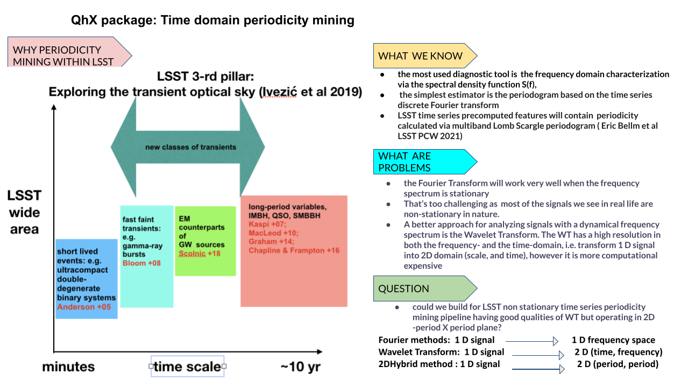

Introduction
Variability in astronomical sources can manifest in multiple forms, intrinsic or extrinsic. Intrinsic variability may be caused by changes in the physical conditions, such as those observed in Cepheid Variables or stellar flares, or it may be accretion-induced, as seen in cataclysmic variables and Active Galactic Nuclei (AGN). Extrinsic variability, on the other hand, results from geometrical factors.
AGN, in particular, are known to exhibit variability of about 10% across various timescales, ranging from less than an hour to several years. This variability is not uniform across all AGN, presenting a wide spectrum of stochastic behavior. In response to the complex nature of the processes governing these variations, and the nonlinearity observed in quasar light curves, our package—Quasar harmonic eXplorer (QhX)—has been developed to include a method for detecting periodic variability through the cross-correlation of wavelet transforms of quasar light curves in pairs of bands.
QhX Project History
Foundation of the Method and Code Functions
Lead: Andjelka Kovacevic, in-kind lead
Publications: - Kovacevic et al. 2018 - Kovacevic et al. 2019 - Kovacevic, Popovic, Ilic 2020
Initial Modularization
Contributor: Viktor Radovic, former in-kind postdoc
Modules Enhancement, Expansion, Packaging, and Testing
Lead: Andjelka Kovacevic
Publications: - Kovacevic et al. 2022 - Kovacevic 2024 (accepted) - `Kovacevic et al. (in prep)
Parallelization
Contributor: Momcilo Tosic, AI guest student under the mentorship of Andjelka Kovacevic
Publication: - Kovacevic, Tosic, Ilic et al. (in prep)
Testing
Contributors: - Momcilo Tosic - Vuk Ostojic - Andjelka Kovacevic within COST Action MW GAIA STSM 2023
QhX Package Overview
The QhX package is structured into several modules, each with a specific role as indicated in the architecture diagram below.

We adopt a modular approach to ensure optimal organization, scalability, and maintainability. By segmenting functionality into distinct modules, we prioritize the separation of concerns, allowing each part of the package to focus on specific aspects of data processing or analysis. This modularity not only facilitates parallel development—enabling different teams to work on separate components simultaneously—but also enhances the scalability of our system, as individual modules can be optimized or redeveloped independently to improve performance and resource management.
Furthermore, the modular design enhances the reusability of our code. Modules crafted for particular tasks can be easily integrated across different parts of the project or reused in future projects, provided they have well-defined interfaces. This approach simplifies testing and maintenance, as each module can be tested and debugged in isolation, reducing the complexity involved in managing a large codebase. Additionally, our modular architecture offers flexibility in integration, making it straightforward to incorporate various components or third-party modules, ensuring they interact seamlessly through established interfaces.
Main Modules
Algorithms Module This module encompasses two algorithmic strategies:
waveletsandsuperlets. Thesuperletssubmodule further divides intosuperletandsuperlets.Utilities Module The
utilsmodule contains essential utility functions, such asmock_lcfor simulating individual red noise light curves for tests andcorrelationfor statistical correlation operations on matrices of wavelet coefficients.Plots Module The
plotsmodule is designed for data visualization, with components forinteractive_plotandregfor interactive plotting and simple plotting of mock light curves, respectively.
Core Components
Light Curve Handling The
light_curveprocesses and returns light curves with an option to include magnitude errors for a given set ID. Also, it identifies and removes outliers from a light curve based on a Z-score threshold or Median Absolute Deviation (MAD). It can optionally consider errors in flux measurements for a more nuanced outlier detection.Parallelization Components
parallelization_solverandiparallelization_solverperform parallel computations on High Performance Computing sources using the data as structured as in given examples (parallelization_solver) and on more generalized input (iparallelization_solver).Detection and Calculation These components, along with the
data_manager, form the backbone of the package’s data processing capabilities.Calculationestimates the error of the determined period using the FWHM method. It also uses a 2D Hybrid method to analyze correlation data of wavelet transforms of light curves to determine periods. Significance is determined through Johnson et al. 2018 method by simulating a given number of artificial red noise light curves.Detectioncompares periods detected in different bands to find common periods, if they do not differ more than 10%. It compiles the results, including period values, errors, and significance, into a structured format.Batch Processing The
batch_processorandmerge_batch_csvhandle the processing of data obtained on HPC in batches and the merging of outputs into a single CSV file.
Output Modules
The output and output_parallel modules, although not directly connected to others in the diagram, serve as end points for the system’s process flow.
The first module handles serialized data and calculates the Intersection over Union metric. It also classifies individually
detected periods in band pairs as ‘reliable’, ‘medium reliable’, ‘poor’, or ‘NAN’ based on the significance of the detected period, the relative lower and
upper errors, and the IoU of the error circles provided. The second module classifies and aggregates results from batches obtained from HPC.